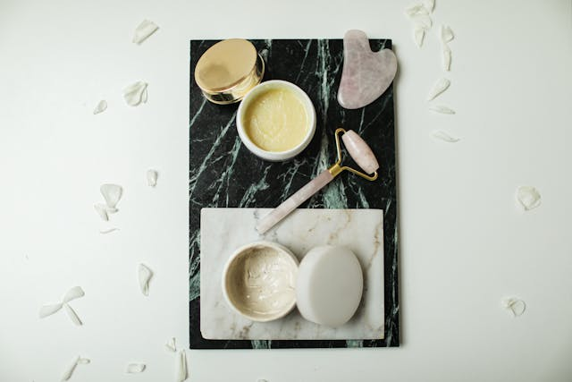
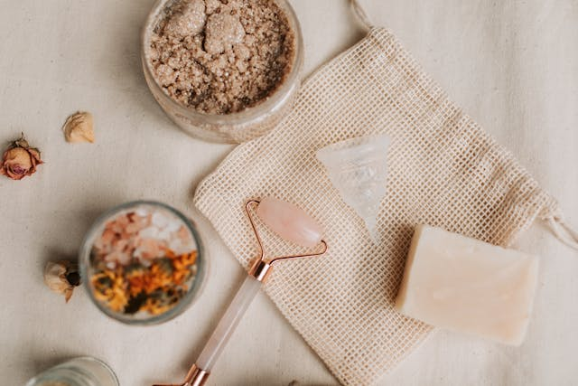
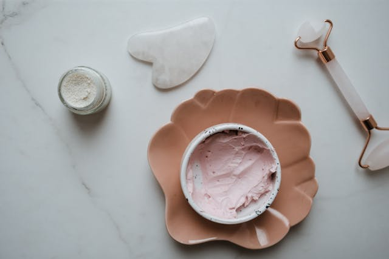
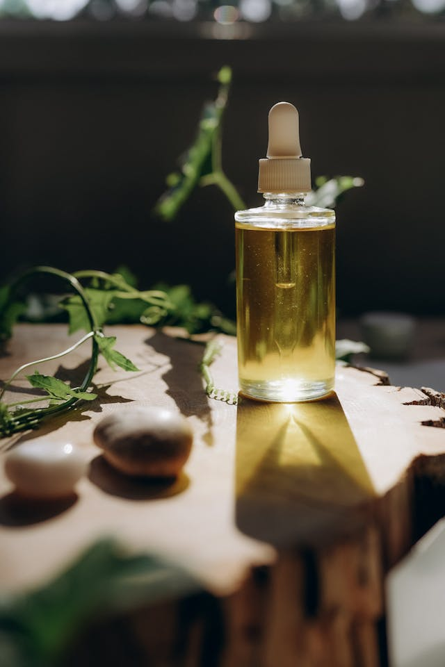
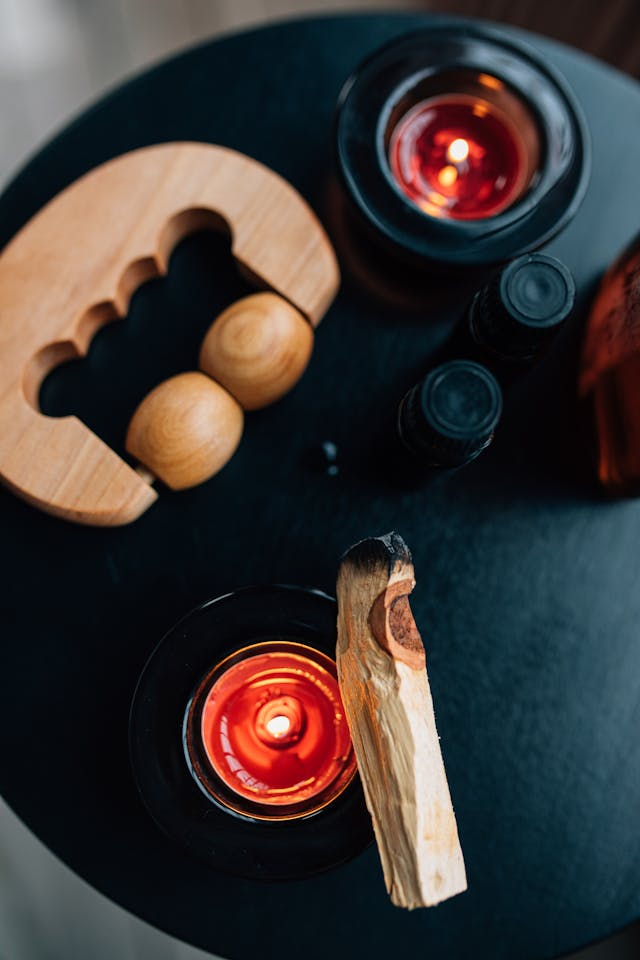
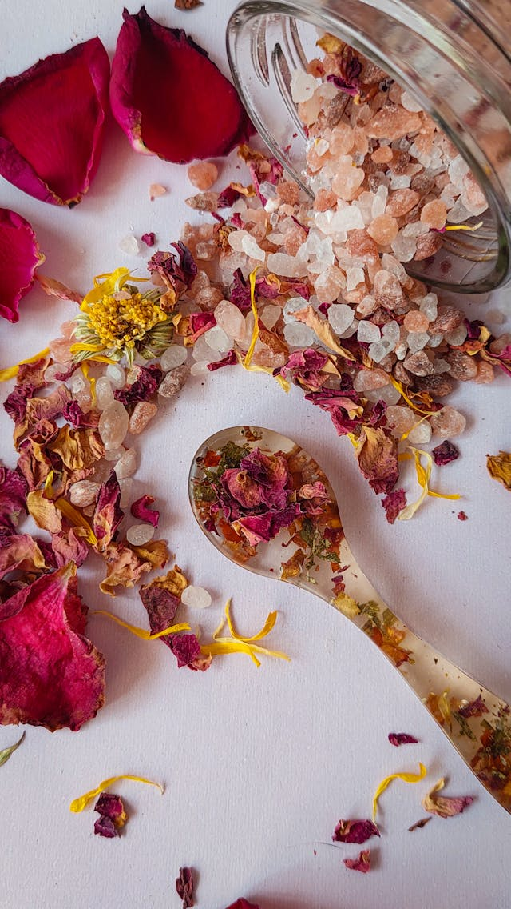

Photo by Cup of Couple on Pexels
Moonstone Glow Facial
A hydrating facial designed to restore radiance and softness to tired skin.
Nature, moonlight, and mindful rituals for a softer, slower you.
Each treatment is crafted to feel like a gentle pause in the middle of a busy life. We focus on slow, intentional touch, natural ingredients, and a calm environment.

Photo by Cup of Couple on Pexels
A hydrating facial designed to restore radiance and softness to tired skin.

Photo by Vlada Karpovich on Pexels
A calming facial for sensitive skin using herbal infusions and fragrance-free products.

Photo by Polina Kovaleva on Pexels
A ritual-style facial with warm compresses, gentle exfoliation, and a hydrating mask.

Photo by PNW Production on Pexels
A light to medium pressure massage using herbal oils.

Photo by KoolShooters on Pexels
A focused massage combining deeper pressure with slow, intentional movements.

Photo by Ani Coloca on Pexels
A full-body sugar scrub with wildflower essences.